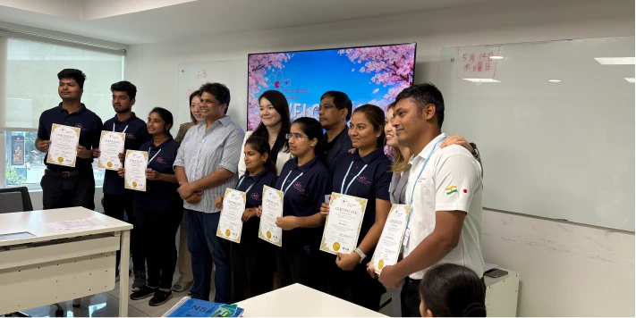
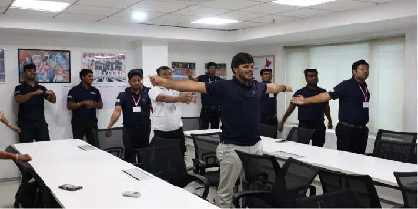
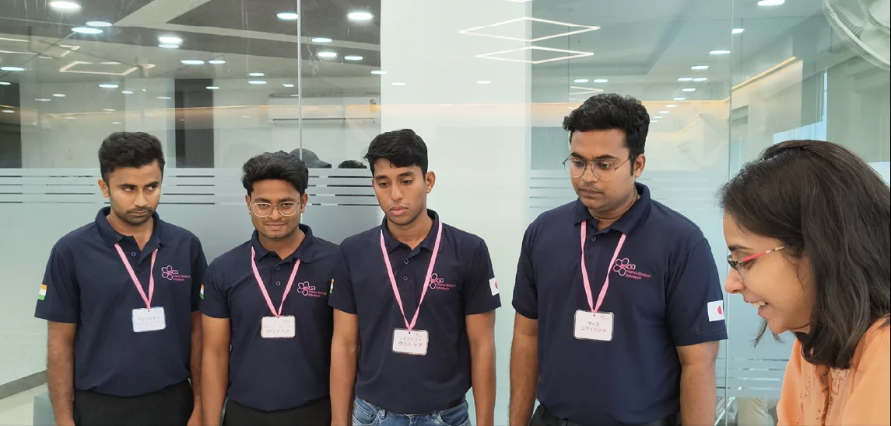

精神に焼き付く「超・徹底教育」
貴社の現場に配属されたその日から、スムーズに適応し、戦力となるために。
Hana Global Supportは、他社には真似できない「妥協なき選抜」と「日本式ビジネス習慣の教育」を実践しています。
インド国内15校以上の大学から
「就業意欲×能力」で更に厳選
インド国内の有力大学（25万人超のネットワークを誇るJNTUなど）
から、ただの労働者ではなく「日本でキャリアを築きたい」という猛
烈な熱意を持った若者だけをテストし、トップ層のみを選抜しています。母集団の質が、そもそも他社と違います。

「1日8時間×5ヶ月」の
超・スパルタ式日本適応訓練
「日本語を少し話せる」程度では、現場では何の役にも立ちません。
私たちは、日本のビジネス習慣・生活マナーを“無意識に動けるレベ
ル”まで身体に叩き込みます。
遅刻は1分たりとも許さない徹底的な時間厳守の習慣化。
トラブルを未然に防ぐ「報告・連絡・相談」の実戦ロールプレイ。
日本の複雑なゴミの分別、電車やバスの公共マナー、共有空間の使い
方の完全マスター。

【建設特化】最高峰の国立土木学院
「NAC」による実技・安全指導
建設・土木人材は、テランガナ州首相が Chairman を務め、年間50,000人が受講するインド最高峰の訓練機関「National Academy of Construction (NAC)」で実地研修を行います。日本の現場が最も厳格に求める「安全基準」と「実務の基礎」を入国前に習得させるため、配属初日から「次は何をすればいいですか？」と自発的に動ける人材に育ちます。
現地での教育の様子を、動画でも
言葉が通じない、マナーが守れない……そんな不安を口にする前に、まずは私たちの受講生たちの日常をご覧ください。
日本の厳格なビジネスルールを体で覚え、自発的に動き、笑顔で日本語を紡ぎ出す。嘘偽りのない「真剣な授業風景」が、
ここにあります。
